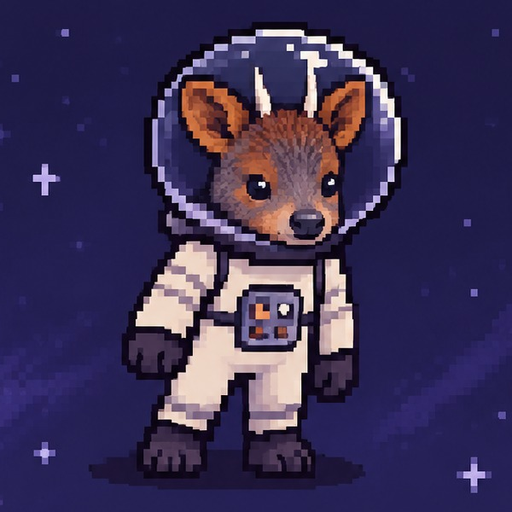
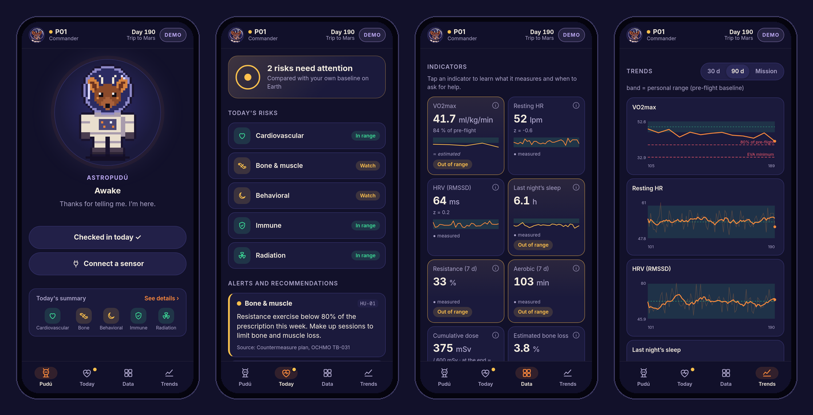
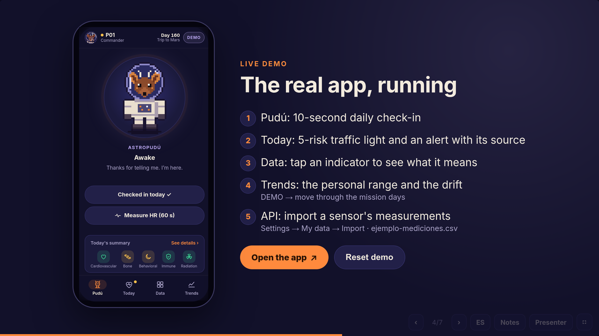

NASA Space Apps Challenge 2026 · TecMedHub
An open health-monitoring platform: any medical sensor connects through one open API, and each astronaut is compared with themselves, on board and offline. It warns weeks before a standard limit is crossed and cites every source. Una plataforma abierta de monitoreo de salud: cualquier sensor médico se conecta por una API abierta, y cada astronauta se compara consigo mismo, a bordo y sin conexión. Avisa semanas antes de cruzar un límite estándar y cita cada fuente.
On a phone, open the app and choose "Install" to use it like any other app, also offline.En el celular, abre la app y elige "Instalar" para usarla como cualquier otra app, también sin conexión.

Companion and daily check-in, today's risks and alerts, indicators, and trends against your personal range.Acompañante y registro diario, riesgos y alertas de hoy, indicadores y tendencias contra tu rango personal.

Recorded from the real app. Original soundtrack by Benjamín Catipillan-Ulloa.Grabado desde la app real. Tema musical original de Benjamín Catipillan-Ulloa.
Seven slides for five minutes, with the live app inside. Arrow keys to move, N for speaker notes, L for language.Siete diapositivas para cinco minutos, con la app funcionando adentro. Flechas para avanzar, N para las notas, L para el idioma.

Our own designs or third-party devices send measurements in one format; the engine treats them the same. The phone camera is a fallback. API docsDiseños propios o equipos de terceros envían mediciones en un formato; el motor las trata igual. La cámara del celular es una alternativa. Documentación de la API
The first 7 days calibrate your baseline; from day 8 every value is compared with it.Los primeros 7 días calibran tu línea base; desde el octavo cada valor se compara con ella.
14 cited rules from NASA standards and guidelines, a detector calibrated on real data, 64 automated tests.14 reglas citadas de estándares de NASA y guías, un detector calibrado con datos reales, 64 pruebas automáticas.
AES-256 encryption on the device, optional PIN, no server, accounts or analytics.Cifrado AES-256 en el dispositivo, PIN opcional, sin servidor, cuentas ni analítica.